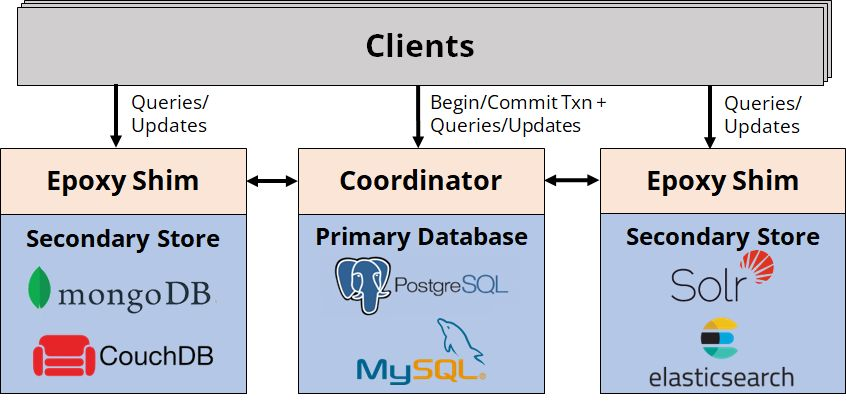
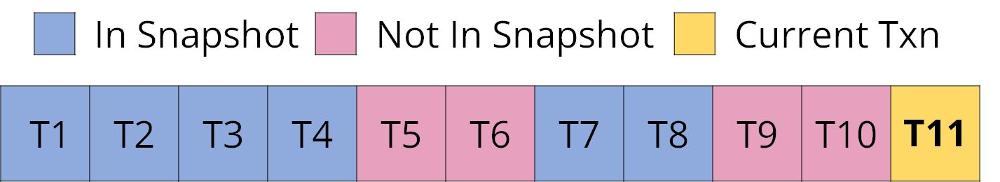
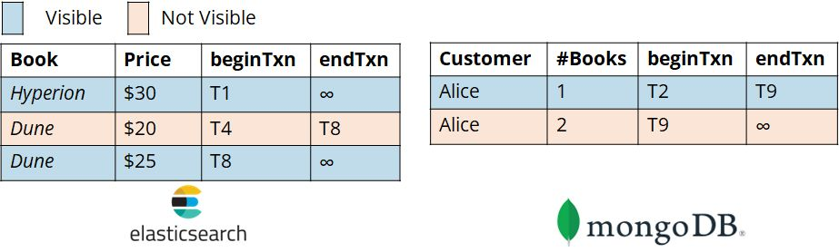

These days, it's pretty common for a single application to use multiple data stores. Sometimes, it's because each data store is specialized for a particular task. For example, an e-commerce site might use Postgres for robust customer data management, Elasticsearch for fast product search, and S3 for cheap image storage. Other times, it's because an app was built by multiple teams over time, so it ends up with one service storing customer data in Postgres and another storing customer data in MongoDB.
Building apps with multiple data stores is tricky because it's hard to coordinate operations across those stores. Most databases have a notion of a transaction, a group of related operations which execute as a single atomic, consistent, isolated, and durable unit of work. The canonical example of a transaction is transferring money between bank accounts: to transfer $100 from me to you, the bank runs a transaction which withdraws $100 from my account and deposits $100 in your account. By running both operations in one transaction, we guarantee that either both go through (and the money is transferred) or neither do (and nothing happens), avoiding failure states where $100 disappears from my account but doesn't appear in yours. However, transactions only work within a single database, so if our our system spans multiple data stores, performing operations reliably is much harder. The traditional solution is to use two-phase commit through a protocol like X/Open XA. However, while XA is supported by most big relational databases like Postgres and MySQL, it's not supported by popular newer data stores like MongoDB, Cassandra, or Elasticsearch, even though those stores are increasingly embracing transactions. This means that if you want to perform reliable operations across multiple data stores, you probably have to do all the hard work of synchronization, concurrency control, and failure management yourself.
In this blog post, I want to tell you about a new protocol named Epoxy (paper), developed as part of my PhD work at Stanford in the DBOS project, which should make this problem easier by providing ACID transactions across hetergeneous data stores. The basic idea behind Epoxy is that we can use a single transactional "primary database", like Postgres, to coordinate transactions among itself and multiple potentially non-transactional "secondary stores", like MongoDB or Elasticsearch. Here's the high-level architecture:

Epoxy works by adapting multi-version concurrency control (MVCC) to a cross-data store setting. We start an Epoxy transaction by initiating a transaction on the primary database. We then ask the primary database for a snapshot, a list of all past primary database transactions whose effects are visible to our new transaction. Typically, that's all transactions that committed before our new transaction began. Here's what a snapshot might look like:

Here, the blue transactions form the snapshot of our new transaction T11, while the pink transactions are invisible to it because they weren't complete when T11 started.
After beginning a transaction, Epoxy interposes on all its reads and writes to secondary stores to enforce snapshot isolation. This provides the abstraction that the transaction operates on a fixed view of data containing only the changes committed by transactions in its snapshot on any data store. Whenever a record is updated on any secondary store, Epoxy doesn't change it in place, but instead creates a new version of it. It tags that version with two pieces of metadata: the ID of the transaction that created the version (beginTxn) and the ID of the transaction that superseded it with a new version (endTxn; this is initialized to infinity, then set when the version is superseded). Epoxy stores this metadata inside the record itself, for example as an additional field in a MongoDB or Elasticsearch document. Then, whenever a read occurs, Epoxy interposes on it, filtering its data source to only include records whose beginTxn field is in the transaction snapshot and whose endTxn field is not. In other words, each transaction can only see the one unique version of a record that was created by a transaction in its snapshot, but not superseded by any transaction in its snapshot. To make that more clear, let's extend our example from earlier and imagine that T11 is a transaction between Postgres and MongoDB:

Here, the blue record versions are visible because they were created but not superseded by transactions in T11's snapshot, while the pink versions are not visible because they were either created by a transaction not in T11's snapshot (like T9) or superseded by a transaction in T11's snapshot (like T8). Thus, Epoxy guarantees that if the effects of a transaction are visible to us in Postgres, they're also visible in MongoDB, and vice versa.
Epoxy also guarantees that transactions are atomic and durable: they either commit on all stores or abort and are rolled back on all stores. After a transaction is done with all operations on all stores, Epoxy validates it, verifying that none of its operations conflict with concurrent committed transactions on any data store (this is a form of optimistic concurrency control). It then asks all secondary stores to persist the transaction's changes to durable storage. If these steps succeed, Epoxy commits the transaction by committing on the primary database. This causes the transaction to appear in future snapshots, atomically making it visible to all future transactions on all data stores. If anything goes wrong, Epoxy aborts, rolling back the transaction on the primary database and undoing its changes on all secondary stores. Even if that process takes a long time, that's fine—none of its changes are visible to any other transactions because, unless committed, they aren't in anyone's snapshots.
Of course, like any new protocol, Epoxy has limitations. First, it makes assumptions about secondary stores, specifically that they provide a way to tag records with metadata and efficiently filter records based on that metadata. Luckily, these assumptions are met by most popular data stores; for example, in MongoDB, you can store all Epoxy metadata in additional document fields and create an index on the field to quickly filter it. Second, Epoxy's interposition comes with some overhead. We analyzed it in our paper—on simulated microservices, Epoxy adds overhead of <10% on read-mostly workloads and ~70% on write-heavy workloads compared to a coordination-free baseline. We found this is similar to the overhead added by XA, even though Epoxy supports more data stores and provides stronger guarantees. Third, and most importantly, Epoxy must be the exclusive mode of accessing a secondary store table because it physically modifies records on secondary stores by adding versioning metadata to them. If one application accessing a secondary store table uses Epoxy, all other applications using that store must use Epoxy for operations on that table. This might make Epoxy tricky to adopt for a database used by multiple services, and it's something that can hopefully be improved in future research.
If you're interested in learning more about Epoxy, please check out our paper (appearing at VLDB 2023). The paper contains a formal description of the protocol, proofs of correctness, and detailed experiments. There's also source code for our research prototype available on GitHub, which implements Epoxy for one primary database (Postgres) and four secondary stores (MongoDB, Elasticsearch, MySQL, and Google Cloud Storage).